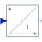

IntegratorOutput the integral of the input signal with optional reset |

|
Information
This information is part of the Modelica Standard Library maintained by the Modelica Association.
This blocks computes output y as integral of the input u multiplied with the gain k:
k
y = - u
s
It might be difficult to initialize the integrator in steady state. This is discussed in the description of package Continuous.
If the reset port is enabled, then the output y is reset to set or to y_start (if the set port is not enabled), whenever the reset port has a rising edge.
Parameters (5)
| k |
Value: 1 Type: Real Description: Integrator gain |
|---|---|
| use_reset |
Value: false Type: Boolean Description: =true, if reset port enabled |
| use_set |
Value: false Type: Boolean Description: =true, if set port enabled and used as reinitialization value when reset |
| initType |
Value: Modelica.Blocks.Types.Init.InitialState Type: Init Description: Type of initialization (1: no init, 2: steady state, 3,4: initial output) |
| y_start |
Value: 0 Type: Real Description: Initial or guess value of output (= state) |
Connectors (4)
| u |
Type: RealInput Description: Connector of Real input signal |
|
|---|---|---|
| y |
Type: RealOutput Description: Connector of Real output signal |
|
| reset |
Type: BooleanInput Description: Optional connector of reset signal |
|
| set |
Type: RealInput Description: Optional connector of set signal |
Used in Examples (3)
|
Modelica.Blocks.Examples Demonstrates the usage of a Continuous.LimPID controller |
|
|
Modelica.Blocks.Examples Demonstrate usage of Nonlinear.SlewRateLimiter |
|
|
Modelica.Electrical.PowerConverters.Examples.DCAC.MultiPhaseTwoLevel Test of pulse width modulation methods |
Used in Components (4)
|
Modelica.Blocks.Continuous PID-controller in additive description form |
|
|
Modelica.Blocks.Continuous P, PI, PD, and PID controller with limited output, anti-windup compensation, setpoint weighting and optional feed-forward |
|
|
Modelica.Electrical.Machines.Examples.ControlledDCDrives.Utilities Limited PI-controller with anti-windup and feed-forward |
|
|
Modelica.Electrical.Machines.Examples.ControlledDCDrives.Utilities Ideal DC-DC inverter |